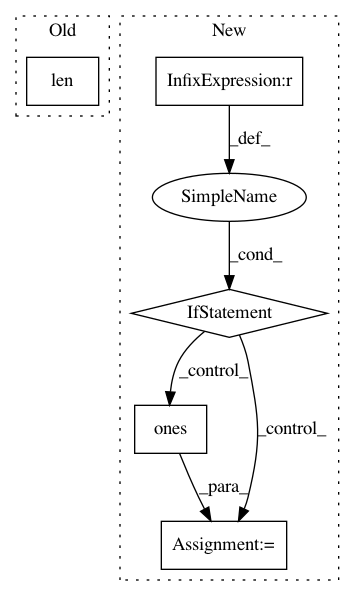

571b9a237f2d05115fb34d7e7f023ffc1a3df650,tfcoreml/_layers.py,,batchnorm,#Any#Any#,75
Before Change
context.translated[output_name] = True
context.builder.add_batchnorm(
output_name, len(mean), gamma, beta, mean,
variance, input_name, output_name, epsilon=epsilon)
def concat(op, context):
After Change
gamma, beta, mean, variance = param_list
if mean.shape == (0,):
mean = np.zeros((num_channels,))
if variance.shape == (0,):
variance = np.ones((num_channels,))
epsilon = op.get_attr("epsilon")
context.translated[output_name] = True
context.builder.add_batchnorm(
In pattern: SUPERPATTERN
Frequency: 4
Non-data size: 5
Instances
Project Name: tf-coreml/tf-coreml
Commit Name: 571b9a237f2d05115fb34d7e7f023ffc1a3df650
Time: 2017-11-10
Author: shuoxin_lin@apple.com
File Name: tfcoreml/_layers.py
Class Name:
Method Name: batchnorm
Project Name: Qiskit/qiskit-aqua
Commit Name: 1f438ce2af4f38f55c4fbdaf8e6d2a04895377a3
Time: 2019-04-10
Author: stefan@swoerner.de
File Name: qiskit/aqua/components/random_distributions/multivariate_normal_distribution.py
Class Name: MultivariateNormalDistribution
Method Name: __init__
Project Name: nipy/dipy
Commit Name: 1a8468988ae35b6d3814288018fc2f9056e74974
Time: 2011-07-21
Author: garyfallidis@gmail.com
File Name: dipy/reconst/gqi.py
Class Name: GeneralizedQSampling
Method Name: __init__
Project Name: IBM/adversarial-robustness-toolbox
Commit Name: 7af1c44934884231eaf970d769f2598e90c00af5
Time: 2019-05-09
Author: beat.buesser@ie.ibm.com
File Name: art/classifiers/sklearn_logistic_regression.py
Class Name: SklearnLogisticRegression
Method Name: loss_gradient